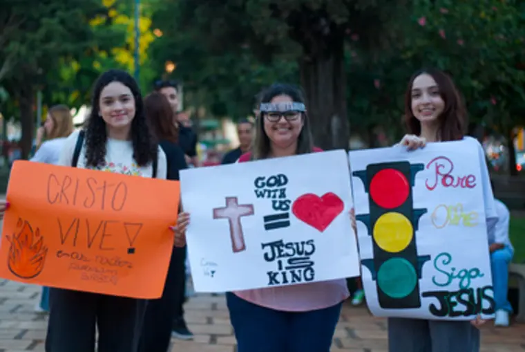
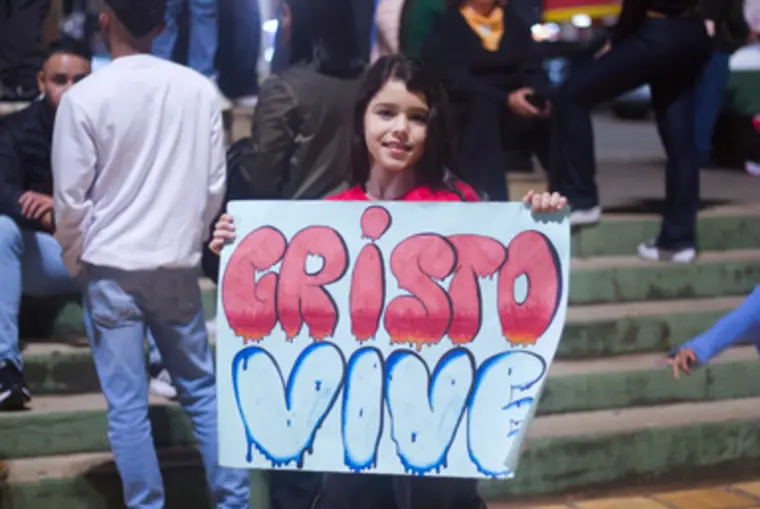
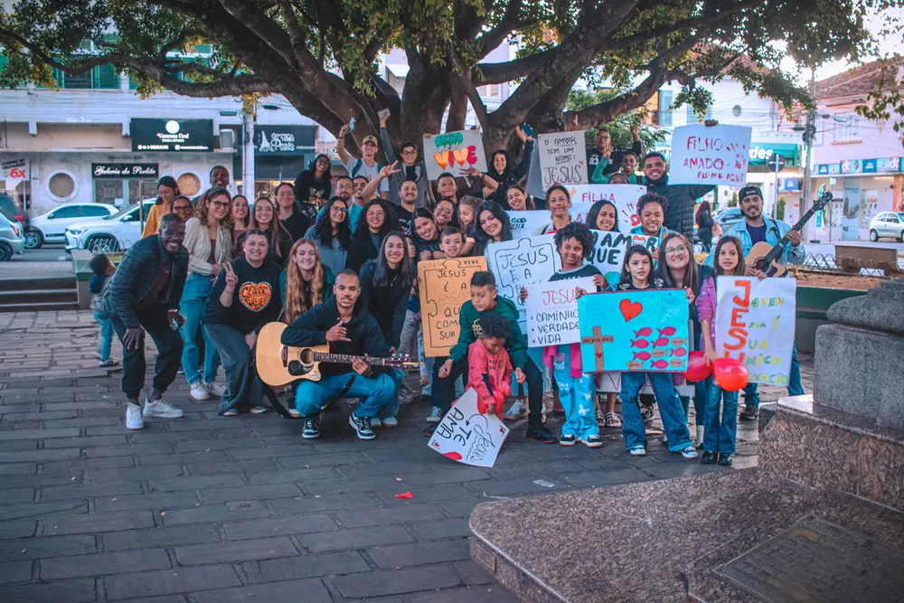
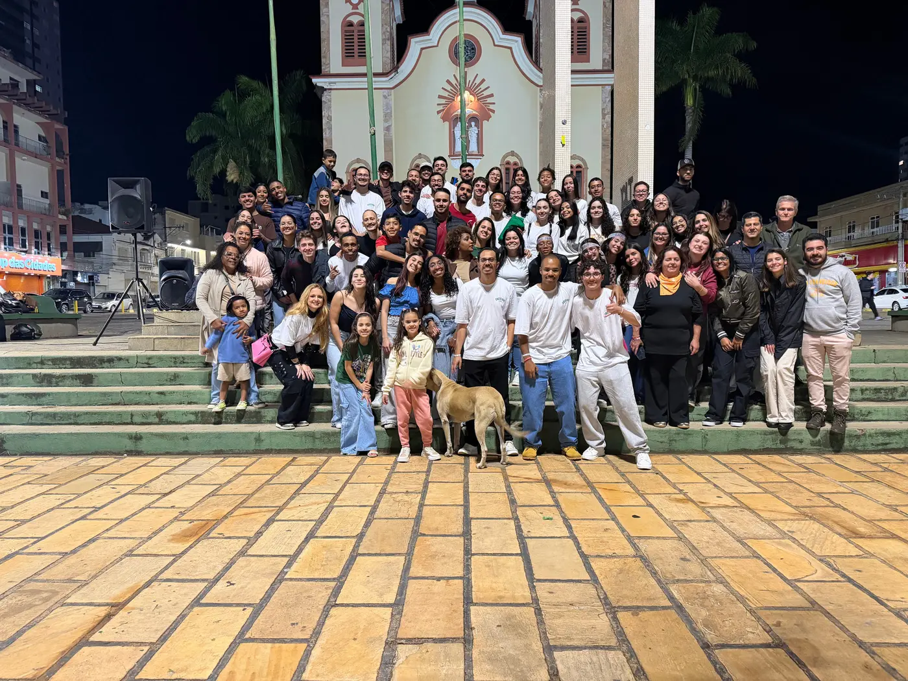

Cristo Vive Movement apresenta
Você está pronto?
2026
- Data
- Local
- A definir
- Inscrições
- A definir
キリスト・生きている Cristo está vivo
Jovens que acreditam que seu campo missionário é onde estiverem.
O convite, na voz de quem faz
Cristo Vive Movement — Conference 2026 YouTube
Cofundador do movimento
Marcos Madalena
Marcos Madalena é um jovem cristão, líder e cofundador do Cristo Vive Movement, escritor e missionário da VFC Alfenas, comprometido em viver e anunciar o Evangelho de forma prática no dia a dia. Apaixonado por Jesus, ama e serve a igreja local, entendendo que é nela que somos edificados e fortalecidos como corpo.
O que é o Cristo Vive Movement
O Cristo Vive é um movimento que nasceu no coração de Deus. Um movimento que tem como objetivo contar e mostrar ao mundo que Cristo Vive. Um movimento que crê no poder de Deus, crê que ele continua curando, libertando e transformando vidas.
São jovens que acreditam que seu campo missionário é onde estiverem, jovens que sonham em ver as nações sendo chacoalhadas pelo poder de Deus. Jovens que creem nos dons do Espírito Santo, jovens que se posicionam para estabelecer o Reino de Deus nas esferas da sociedade.
“E agora, Senhor, olha para as suas ameaças, e concede aos teus servos que falem com toda a ousadia a tua palavra, estendendo tu a mão, para que se façam curas, e sinais, e prodígios, pelo nome de teu santo Filho Jesus.”
Atos 4 : 29–30

O movimento em campo
Registros das ações



Informações práticas
- Data
- Horário
- A definir
- Local
- A definir
- Endereço
- A definir
- Cidade
- A definir
- Investimento
- A definir
Enquanto isso
Um dia. Um chamado. Uma geração que decide se posicionar.
Local, horário e inscrições ainda não foram divulgados. Assim que forem confirmados, os campos ao lado passam a exibir a informação real — definida em um único ponto do código.
Fazer minha inscrição